LLM-Guided Tool-Aware Task and Motion Planning for Chemistry Lab Automation
Abstract
Autonomous chemistry laboratories can accelerate material discovery and improve experimental reproducibility. However, current systems are limited by rigid tool configurations and unreliable motion planning under orientation and collision constraints, and language-model-based planners stop at protocol generation without reasoning about execution context. This paper proposes a hierarchical, tool-aware task and motion planning framework for chemistry automation that couples large-language-model reasoning with batched differentiable optimization. The system converts natural-language instructions into validated chemical description language protocols, infers end-effectors and obstacle rearrangement strategies from procedural context, estimates the scene state through multi-view fiducial markers, and optimizes collision-free, constraint-satisfying trajectories in parallel, while a sensor-driven skill library handles tool changing and adaptive pouring. On a six-degree-of-freedom manipulator, the planner solves every configuration of three constrained tasks within the time budget, with each optimization round taking a narrowly bounded time per task, and on the task whose orientation constraint is most restrictive it reaches a 100.0% planning success rate against 73.3% for a sequential parameter-binding baseline. In randomized trials and ablation studies in an NVIDIA Isaac Sim testbed, the full framework executes complete chemical sequences involving tool switching, obstacle rearrangement, and multi-step reagent manipulation. On the physical robot, adaptive pouring reached a mean absolute error of 0.19–0.34 g for water and a syrup of about 3,000 cP and 0.36–0.73 g for powdered sugar over target masses of 10–50 g, and the Transfer procedure planned from the perceived positions was completed in all nine runs.
Methodology
The framework addresses three limitations of chemistry laboratory automation with four modules. The LLM Module converts natural-language instructions into validated XDL protocols and determines the execution context of each procedure, namely end-effector selection and obstacle rearrangement. The TAMP Module adopts cuTAMP as its planning backbone for constrained motion planning with bounded latency. The Skill Library Module handles through sensor feedback the execution-level actions that geometric planning alone cannot, such as adaptive pouring and temperature regulation. The Perception Module underpins all three by constructing the World State.
Protocol Generation, Validation & Context-Aware Action Reasoning
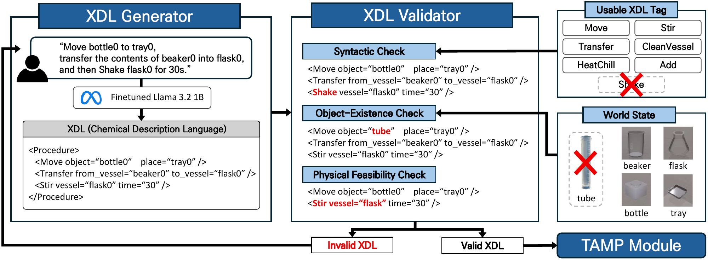
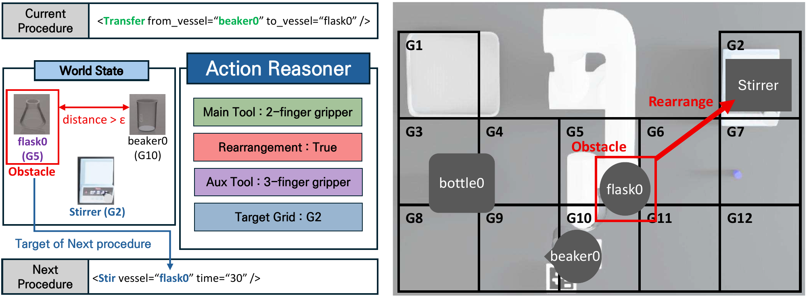
The LLM Module proceeds through three stages. The XDL Generator, a fine-tuned Llama 3.2 1B model, converts a natural-language command into a complete XDL protocol in a single pass. The XDL Validator then applies three progressively stricter checks, namely syntactic, object-existence, and physical-feasibility validation, which together verify 25 enumerated conditions before any robot motion is executed. Before each procedure, the Action Reasoner, a second fine-tuned Llama 3.2 1B model, reads the current and next procedures and the World State and infers four discrete outputs: the main end-effector, whether obstacle rearrangement is necessary, the auxiliary tool for rearrangement, and the target grid among 12 workspace grids. The LLM is confined to these discrete symbolic outputs, and the TAMP Module resolves the exact placement in continuous space, which keeps hallucinated spatial quantities out of the planning pipeline.
Multi-View World-State Grounding
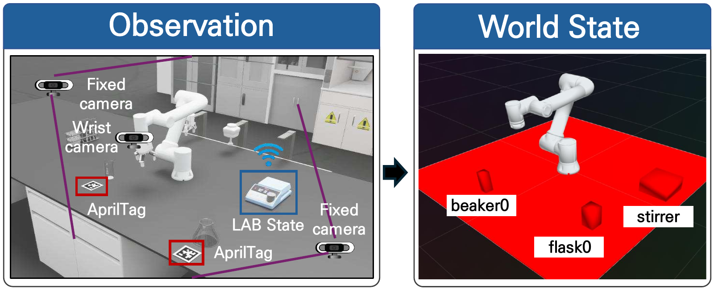
The Perception Module estimates the 6-DoF poses of laboratory assets from AprilTag markers affixed to each vessel. Two calibrated RGB cameras at separated positions estimate the poses continuously, and their estimates are fused by inverse-distance weighting with SLERP for orientation. When only one camera sees a marker, its estimate is used directly. When neither fixed camera can read a marker or its measurement cannot be trusted, the arm carries a wrist camera through predefined viewpoints to search for it, and if the wrist camera cannot read it either, execution stops and the object is reported to the user. The poses are assembled into the World State at every procedure boundary, with objects approximated by primitives covered with spheres for collision checking. The module also filters the scale and temperature streams that the closed-loop skills consume.
Batched Joint Differentiable Optimization with Chemistry-Specific Operators
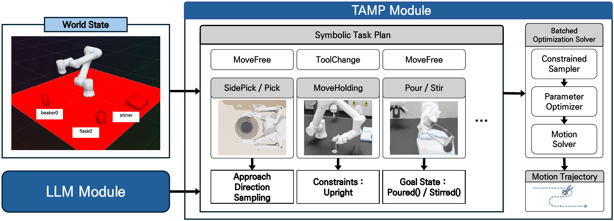
The TAMP Module adopts cuTAMP as its planning solver, jointly optimizing all constraints across a large batch of candidate particles by gradient-based updates. Because a fixed number of optimization steps runs over a fixed particle budget, one optimization round takes a narrowly bounded time, and a round that finds no solution is restarted with fresh particles, so planning latency can be estimated in units of rounds. Four chemistry-specific operators are introduced: SidePick for full-circumference grasping of cylindrical vessels, MoveHolding for upright-constrained transport within a tilt bound of 5°, Pour for the geometric tilting trajectory that hands over to the pouring skill, and Stir for device-level stirrer control delegated to the execution layer.
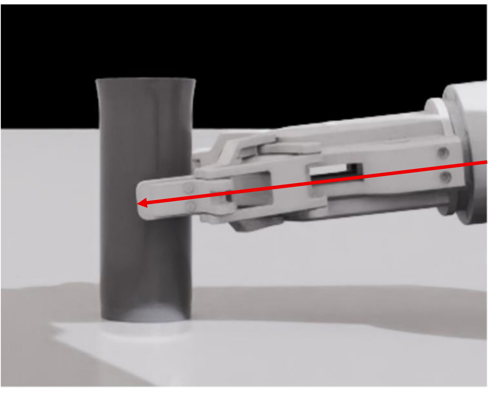
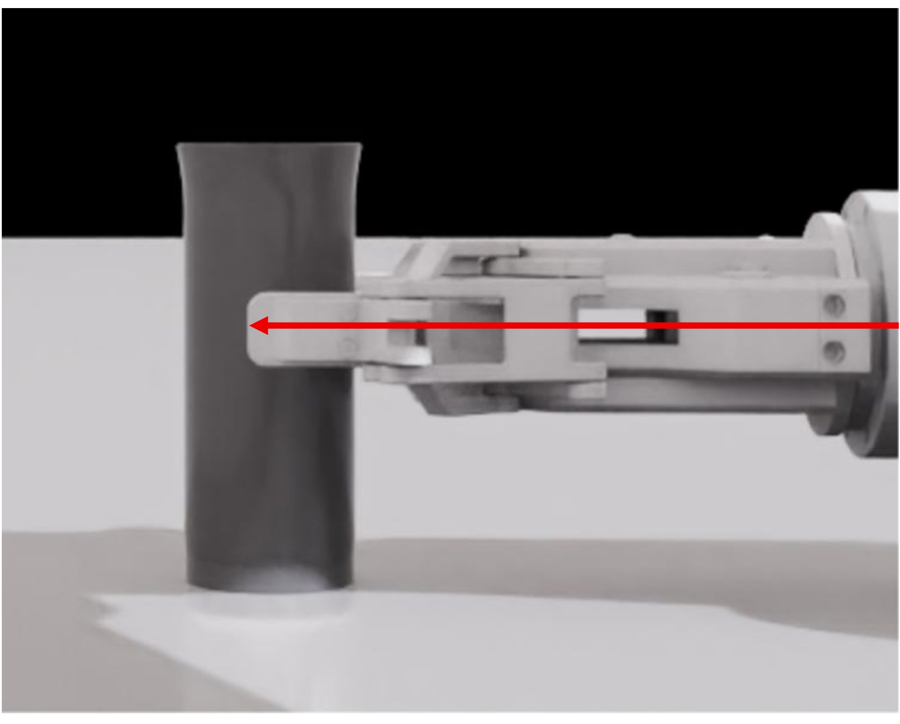
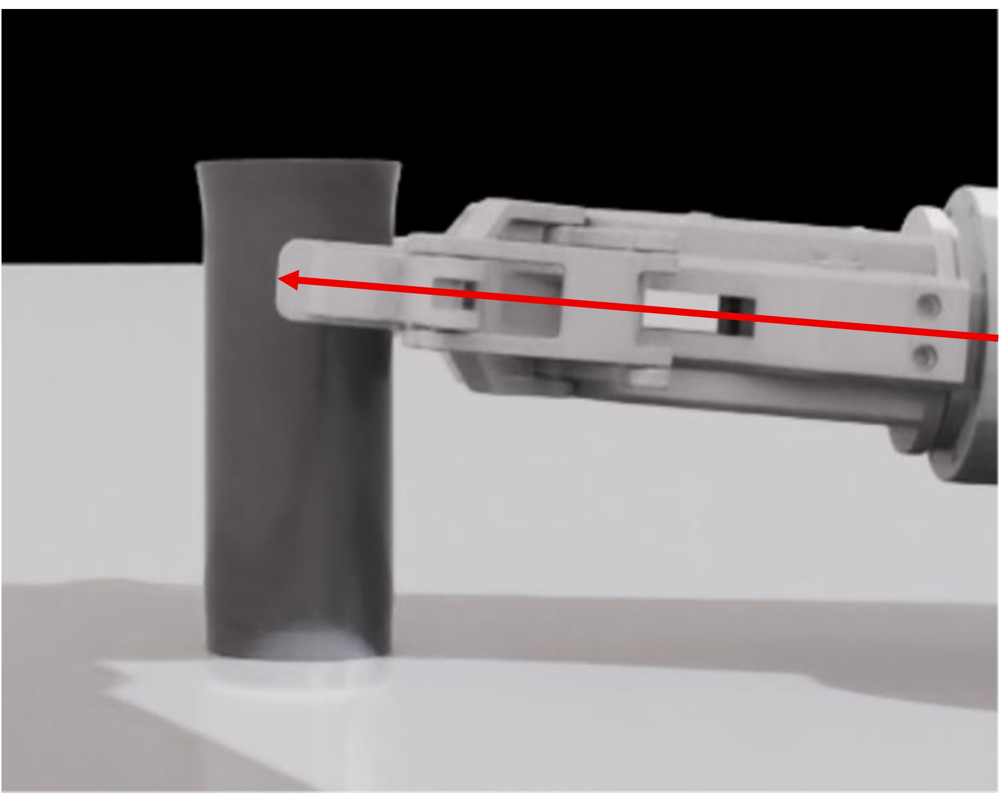
Discrete yaw candidates for the SidePick operator, illustrating how gripper tilt varies across the sampled configurations. Left: y = −π/2.5. Middle: y = π/2 (or −π/2). Right: y = π/2.5.
Sensor-Feedback-Based Motion Primitives
The Skill Library Module instantiates nominal TAMP trajectories into sensor-feedback-driven motion primitives. Adaptive Pouring estimates the flow rate as the slope of a line fitted to the recent scale readings. It detects the angle at which the reagent starts to flow on every pour, adjusts the tilt to follow a target flow rate proportional to the amount remaining, and returns the vessel below that angle once the measured weight plus the predicted amount still in flight reaches the target. Automatic Tool Changing executes electromagnet control and mechanical latching at the tool rack. Feedback-Based Device Control monitors temperature and RPM streams and suspends execution until the target physical conditions are met.
LLM Module Prompts & In-Context Examples
Both fine-tuned components share a structured prompt format. The system prompt defines the task constraints, and in-context examples condition the model's output format before the actual user query is provided.
Receives the current/next XDL step, obstacle status, and candidate grids,
then outputs four tokens: main_tool, need_rearrange,
aux_tool, and target_grid.
Fine-tuned from Llama 3.2 1B with three in-context example types.
You are a tool and rearrangement planner for laboratory automation.
Tool Rules:
• dh3 (3-finger) : Move, Stir for cylindrical vessels
• ag95 (2-finger) : All Transfer operations
• vgc10 (suction) : Objects exceeding gripper span
Given the current and next XDL steps, the obstacle status, and candidate
grids, output exactly four tokens separated by commas:
main_tool, need_rearrange, aux_tool, target_grid
Allowed values:
• main_tool : dh3 | ag95 | vgc10
• aux_tool : dh3 | ag95 | vgc10 | None
• need_rearrange : True | False
• target_grid : grid ID (e.g., G5) | NoneExample 1 — No Rearrangement
Current XDL : <Add vessel="beaker_C" reagent="water" volume="11 mL" />
Next XDL : <Transfer from_vessel="beaker_A" to_vessel="beaker_B" volume="11 mL" />
Obstacle : beaker at G5
Candidate Grids:
• plate zone : [G1]
• workspace edge : [G7, G8, G12]
• open area : [G2, G4, G6, G10]dh3, False, None, NoneExample 2 — Rearrangement (Context-Aware): obstacle is the target of the next step → moved to task-relevant zone
Current XDL : <CleanVessel vessel="flask_B" />
Next XDL : <Stir vessel="flask_A" time="16 s" />
Obstacle : flask_A at G4 (blocking)
Candidate Grids:
• stirrer zone : [G2]
• plate zone : [G1]
• workspace edge : [G7, G8, G12]
• open area : [G3, G4, G5, G6, G10, G11]dh3, True, dh3, G2Example 3 — Rearrangement (Irrelevant): obstacle is unrelated to the next step → moved to workspace edge
Current XDL : <CleanVessel vessel="beaker_A" />
Next XDL : <Move object="box_A" place="plate_A" />
Obstacle : bottle_A at G11 (blocking)
Candidate Grids:
• plate zone : [G1]
• workspace edge : [G12]
• open area : [G2, G3, G4, G5, G6, G9, G10, G11]dh3, True, vgc10, G12Experiments
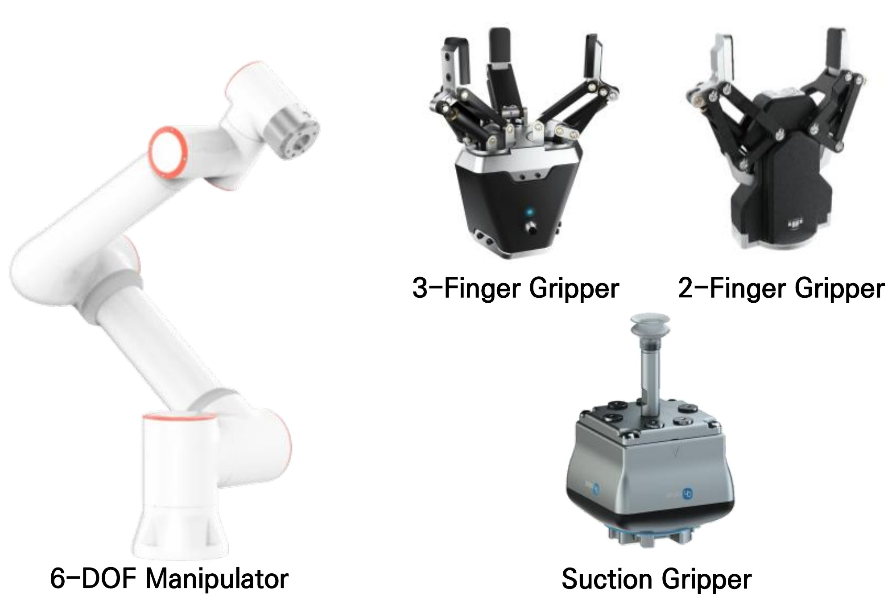
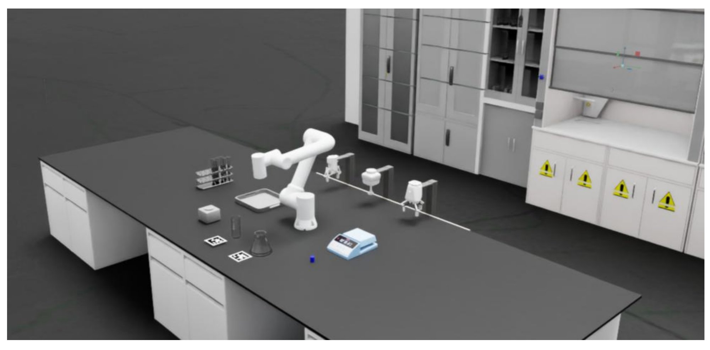
Hardware and simulation environment. Left: the 6-DoF collaborative manipulator (FAIRINO-FR5) with its 2-finger, 3-finger, and suction grippers. Right: the simulation testbed built in NVIDIA Isaac Sim. Each task is evaluated from 30 randomized initial configurations, in the ground-truth state with the poses of the simulator and in the perception state with the poses that the Perception Module estimates from rendered camera images. Pouring and the Transfer procedure are further validated on the physical FR5.
Experiment Setup
The simulation testbed generates 30 distinct initial configurations per task under identical constraint settings. Every planner receives the same configurations, and the flow of liquids and powders and the scale measurement are not simulated, so the simulated Transfer is judged only up to the execution of the pouring motion and pouring accuracy is evaluated on the physical robot.
| Item | Setting |
|---|---|
| Simulator | NVIDIA Isaac Sim 6.0.0.1 |
| Compute | One workstation (AMD Ryzen 7 9800X3D, NVIDIA RTX 5080 16 GB, 30 GB RAM) |
| Physics integration | Step of 1/60 s, one substep, TGS solver with 8 position and 1 velocity iterations per object |
| Trajectory execution | Issued against the same 60 Hz step, joint velocity limit of 0.625 rad/s |
| Joint drives | Joints 1–3: stiffness 1008.44 N·m/deg and damping 100 N·m·s/deg. Joints 4–6: stiffness 379.82 N·m/deg and damping 1.5 N·m·s/deg |
| Bench | Twelve cells spaced 0.30 m apart. The cell centers are twelve of the combinations of x ∈ {−0.15, 0.15, 0.45} m with y ∈ {−0.6, −0.3, 0, 0.3, 0.6} m, the row at x = −0.15 m using only y = ±0.6 m |
| Object position (x, y) | Drawn uniformly within ±5 cm of the cell center |
| Object yaw | Drawn uniformly within ±180° |
| Six arm joints | Drawn uniformly within ±10° of the home configuration |
| Configuration seeds | 0–29 per task. Every planner receives the same configurations. The random seed of each planner is fixed per initial configuration and changed at each restart |
Simulation environment and generation of the initial configurations.
A trial counts as a planning success when a collision-free trajectory that satisfies the upright bound θmax is returned within the time budget. It counts as an execution success when all of the following hold after a settling period of 2 s.
- The plan has been carried out in full.
- The target vessel stands within 30° of upright.
- The target rests inside the goal region, whose half-width is 50 mm for the vessels, 75 mm for the box, and 15 mm for the stir bar.
- The stir bar additionally lies inside the mouth of the flask, within 32 mm of the vessel center and below the mouth.
- For Transfer, the pouring motion was performed.
LLM Fine-Tuning
Both LLM components are fine-tuned from a 4-bit quantized Llama 3.2 1B base model via LoRA-based supervised fine-tuning. The differing LoRA configurations were selected empirically based on validation performance.
| Parameter | XDL Generator | Action Reasoner |
|---|---|---|
| Base Model | Llama 3.2 1B (4-bit quantized) | |
| Fine-tuning Method | LoRA-based SFT | |
| LoRA Rank (r) | 16 | 8 |
| LoRA Alpha (α) | 32 | 16 |
| Dropout | 0.05 | 0.05 |
| Optimizer | AdamW (8-bit) | |
| Learning Rate | 2 × 10⁻⁴ | 1 × 10⁻⁴ |
| Batch Size | 16 | |
| Epochs | 5 | 3 |
| Training Dataset Size | 5,000 | 3,000 |
XDL Generator. The 5,000 training samples span synonym variations for the six core XDL operators (Add, Stir, HeatChill, Transfer, CleanVessel, Move), numerical parameter ranges (0.5–20 mL in steps of 0.5 mL, 0–20 °C, 1–30 s), three instance identifiers for each of four vessel types (12 identifiers), and command complexity of 30% single-step, 40% two-step, and 30% three-step procedures. Training, validation, and evaluation commands are separated at five levels. Of 104 sentence templates, 62 are used in training, 12 in a development set, and 30 in evaluation, divided into 18 with unseen wording and 12 with unseen sentence forms. One of the four names of every vessel type appears only in evaluation. The numerical values of each range are split into disjoint pools, and three ordered operator pairs (CleanVessel → Add, HeatChill → Transfer, Stir → Move) are withheld from training. No command occurs in both the training and the evaluation data.
Action Reasoner. The 3,000 training samples place up to four objects on 12 workspace grids and are balanced across rearrangement-required and rearrangement-unnecessary cases, and across context-aware and irrelevant obstacles. Training and evaluation scenarios are separated along three axes. For objects, the fourth instance name of each type (for example, beaker_C) is reserved for evaluation, and the test tube and tray types are not used in training. For spatial relations, 8 ordered grid pairs of target and obstacle (G3–G8, G4–G9, G5–G10, G6–G11, and their reverses) are withheld. For task combinations, 6 pairs of current and next operators (Add → Stir, Stir → Transfer, HeatChill → Move, Transfer → HeatChill, CleanVessel → Add, Move → CleanVessel) are withheld, while every operator still appears in training in both positions.
XDL Generation & Validation
Over 2,300 test commands in seven evaluation sets, only 34 generated protocols differ from their reference. Argument names and units agree in every set, and exact match stays at 97.7–100.0% on the sets that differ from the training distribution at one level and 93.3% on the set that differs at all five. The XDL Validator rejects every one of the 625 protocols that violate one of its 25 conditions, rejects none of the 300 that must pass or the 8,100 reference protocols, and blocks 30 of the 34 errors that the generator actually produced.
| Evaluation set | n | Operators | Argument names | Object identities | Numerical values | Units | Procedural ordering | Exact match [95% CI] |
|---|---|---|---|---|---|---|---|---|
| Matched control | 500 | 100.0 | 100.0 | 99.9 | 100.0 | 100.0 | 100.0 | 99.8 [98.9, 100.0] |
| Unseen object | 300 | 100.0 | 100.0 | 100.0 | 100.0 | 100.0 | 100.0 | 100.0 [98.7, 100.0] |
| Unseen numerical value | 300 | 100.0 | 100.0 | 100.0 | 100.0 | 100.0 | 100.0 | 100.0 [98.7, 100.0] |
| Unseen composition | 300 | 99.7 | 100.0 | 100.0 | 100.0 | 100.0 | 99.7 | 99.7 [98.1, 99.9] |
| Unseen sentence form | 300 | 98.3 | 100.0 | 100.0 | 100.0 | 100.0 | 98.3 | 98.3 [96.2, 99.3] |
| Unseen wording | 300 | 98.3 | 100.0 | 99.8 | 100.0 | 100.0 | 99.7 | 97.7 [95.3, 98.9] |
| All five at once | 300 | 95.3 | 100.0 | 99.9 | 99.3 | 100.0 | 97.7 | 93.3 [89.9, 95.6] |
Field-level accuracy of the XDL Generator (%). The matched control follows the training distribution, the next five sets each differ from it at one separation level, and the last differs at all five.
| Protocol set | n | Rejected (%) [95% CI] |
|---|---|---|
| Must be rejected, syntactic | 250 | 100.0 [98.5, 100.0] |
| Must be rejected, object | 150 | 100.0 [97.5, 100.0] |
| Must be rejected, feasibility | 225 | 100.0 [98.3, 100.0] |
| Must pass, ordinary | 200 | 0.0 [0.0, 1.9] |
| Must pass, near-miss | 100 | 0.0 [0.0, 3.7] |
| Must pass, reference protocols | 8,100 | 0.0 [0.0, 0.05] |
| Errors made by the generator | 34 | 88.2 [73.4, 95.3] |
Outcome of the XDL Validator on the 925 benchmark protocols, on the 8,100 reference protocols of the generator data, and on the errors the generator produced on its own.
| Check | Conditions verified |
|---|---|
| Syntactic (10) | unparsable document, wrong root element, procedure with no steps, operator outside the vocabulary, violation of the case convention, missing required attribute, undeclared attribute, unparsable quantity literal, wrong unit, malformed boolean value |
| Object existence (6) | identifier absent from the object list, identifier absent from the current workspace, reagent absent from the reagent list, identifier used in the wrong argument role, quantity absent from the command, object absent from the command |
| Physical feasibility (9) | parameter outside the operating range, transfer whose source and destination coincide, operation on an empty vessel, transfer exceeding the volume remaining, vessel capacity exceeded, an enumerated reagent pair brought together in one vessel, reuse of an uncleaned vessel, device or placement already occupied, end-effector not held |
The 25 conditions verified by the three validation checks.
TAMP Planning Reliability
On the same 30 randomized configurations per task and a 60 s budget, cuTAMP returns a plan for every configuration of the three tasks. The difference appears on Transfer, where the orientation constraint is most restrictive: 100.0% against 73.3% for PDDLStream (p = 7.8×10−3, exact McNemar), and all of the baseline's failures are timeouts. The solve times of cuTAMP gather by optimization round. On Transfer, 28 of the 30 configurations were solved in the first round at 14.1–16.3 s and the other 2 after one restart.
| Task | Solver | Success (%) [95% CI] | McNemar p | RMTS (s) | Planning time (s) median [IQR] | Timeout (%) | Early termination (%) |
|---|---|---|---|---|---|---|---|
| Transfer | PDDLStream | 73.3 [55.6, 85.8] | 7.8×10−3 | 21.3 | 0.97 [0.60, 3.34] | 26.7 | 0.0 |
| cuTAMP (Ours) | 100.0 [88.6, 100.0] | 15.9 | 14.65 [14.17, 14.90] | 0.0 | 0.0 | ||
| Move | PDDLStream | 100.0 [88.6, 100.0] | 1 | 0.1 | 0.08 [0.06, 0.10] | 0.0 | 0.0 |
| cuTAMP (Ours) | 100.0 [88.6, 100.0] | 8.9 | 8.89 [8.87, 8.92] | 0.0 | 0.0 | ||
| Stir | PDDLStream | 100.0 [88.6, 100.0] | 1 | 1.8 | 0.83 [0.51, 2.23] | 0.0 | 0.0 |
| cuTAMP (Ours) | 100.0 [88.6, 100.0] | 12.8 | 12.00 [11.84, 12.09] | 0.0 | 0.0 |
Planning success and time to solution on the 6-DoF FR5 over the same 30 randomized initial configurations within a 60 s budget. Unsolved trials are right-censored at 60 s. The restricted mean time to solution (RMTS) assigns the budget to unsolved trials, and planning time is given over successful trials only.
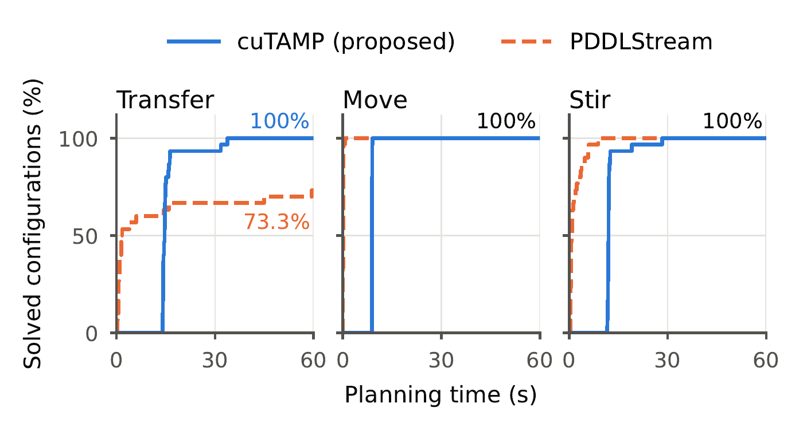
Cumulative solved fraction of the two planners against wall-clock time (Kaplan–Meier curves). A trial that returns no plan within the 60 s budget stays in the denominator, so the final height of each curve gives the final success rate of that planner.
| Item | Setting |
|---|---|
| Proposed planning module | |
| Implementation | cuTAMP 0.0.1, cuRobo 0.7.7 |
| Compute | GPU |
| Collision checking | 50 spheres of radius 5 mm per object, zero margin |
| Search | One plan skeleton, 1,024 particles, 1,000 optimization steps per round |
| Optimizer | Adam, learning rate 7×10−3 (2.226×10−2 for the arm configuration) |
| Cost weights | Kinematic position 1, rotation 5, goal support 2, trajectory length 10−3, all other terms 1 |
| Acceptance | Collision costs below 0.001, placement containment within 0.001 and support within 0.01, joint limits and self-collision met exactly, kinematic error within 0.005 m and 0.05 rad |
| Baseline (PDDLStream) | |
| Implementation | Public implementation (October 2023), FastDownward |
| Compute | CPU, single thread |
| Collision checking | Object box shapes, zero margin |
| Search | Adaptive algorithm, unit costs, at most 10,000 iterations |
| Streams | Grasp, placement pose (200 attempts), inverse kinematics (10 attempts), motion planning |
Settings of the two planners. Both share the same initial configurations, object sizes, symbolic domain, goal conditions, upright bound θmax = 5°, and 60 s time budget, and an attempt that ends without a plan is restarted while budget remains.
LLM-Based Tool Selection & Context-Aware Rearrangement
The Action Reasoner assigns the correct end-effector in all 1,600 unseen scenarios, including object types absent from the fine-tuning data, and decides rearrangement necessity correctly under every condition. Over the 400 situations in which the next procedure requires a particular station, context-aware rearrangement reduces the mean number of manipulations by 37.5% against random rearrangement. On Transfer → Stir it reaches 96.67% sequence completion against 50.0% for random rearrangement and 0% without rearrangement.
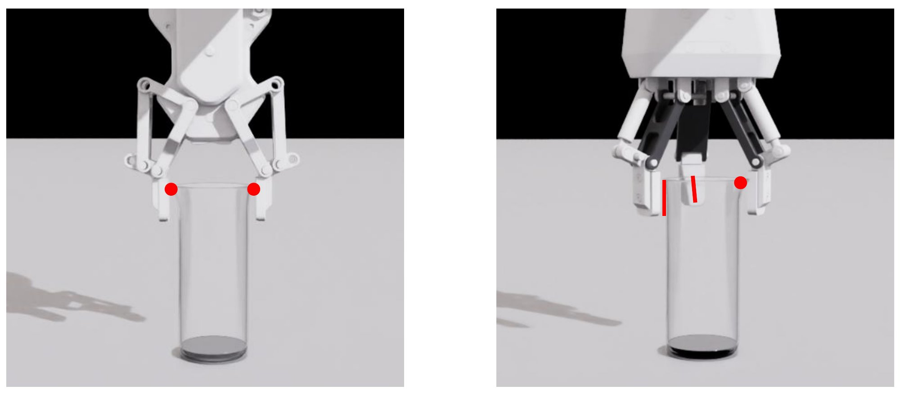
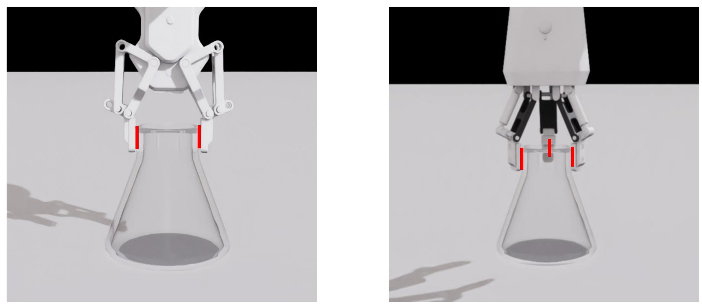
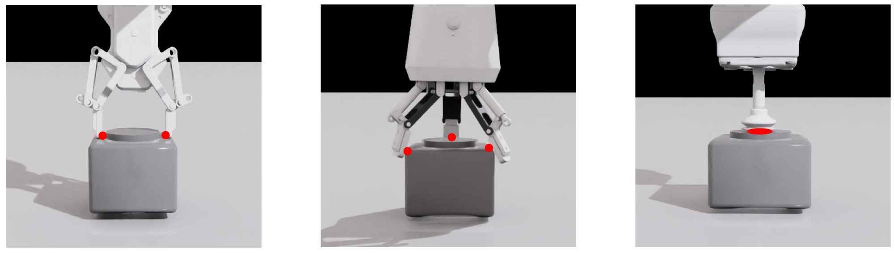
Motivation for multi-gripper tool selection: beaker (top left), flask (top right), and large flat-surface object (bottom). The 2-finger gripper provides insufficient contact area on the rim of cylindrical vessels, whereas the 3-finger gripper achieves stable top-down grasping. For large flat-surface objects exceeding the graspable width of finger grippers, the suction gripper is required.
| Task | Selected tool | Target object | n | Accuracy (%) |
|---|---|---|---|---|
| Add | 3-finger gripper | Beaker, Flask, Tube* | 289 | 100.0 |
| CleanVessel | 3-finger gripper | Beaker, Flask, Tube* | 306 | 100.0 |
| HeatChill | 3-finger gripper | Beaker, Flask, Tube* | 277 | 100.0 |
| Stir | 3-finger gripper | Beaker, Flask, Tube* | 239 | 100.0 |
| Move | 3-finger gripper | Beaker, Flask, Tube* | 159 | 100.0 |
| Suction gripper | Bottle, Box, Tray* | 165 | 100.0 | |
| Transfer | 2-finger gripper | Beaker, Flask, Tube* | 165 | 100.0 |
| All tasks | 1,600 | 100.0 |
Tool assignment accuracy by task and target object type. Object types marked with an asterisk are absent from the fine-tuning data.
| Evaluation set | n | Rearrange needed | Auxiliary tool | nd | Target grid [95% CI] |
|---|---|---|---|---|---|
| Matched control | 400 | 100.0 | 100.0 | 151 | 88.7 [82.7, 92.8] |
| Unseen instance name | 300 | 100.0 | 100.0 | 164 | 95.1 [90.7, 97.5] |
| Unseen object type | 300 | 100.0 | 93.0 | 180 | 92.8 [88.0, 95.7] |
| Unseen spatial relation | 300 | 100.0 | 100.0 | 106 | 84.9 [76.9, 90.5] |
| Unseen task combination | 300 | 100.0 | 100.0 | 143 | 94.4 [89.3, 97.1] |
Rearrangement decision accuracy of the Action Reasoner per evaluation set (%). Each set differs from the training distribution along one axis. The target grid is scored on the nd scenarios that require a rearrangement.
| Sequence | Metric | No Rearrange | Random Rearrange | Context-Aware (Ours) |
|---|---|---|---|---|
| Transfer → Stir | Step 1 success | 0.0 | 60.0 | 96.67 |
| Sequence completion | 0.0 | 50.0 | 96.67 | |
| Stir → Transfer | Step 1 success | 100.0 | 100.0 | 100.0 |
| Sequence completion | 13.33 | 40.0 | 83.33 |
TAMP success and sequence completion rates (%) by rearrangement strategy, over 30 randomized trials per sequence and condition.
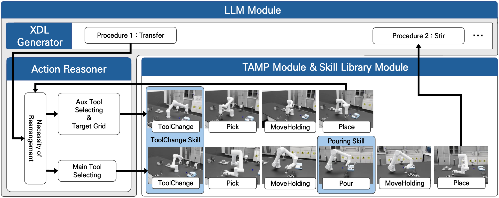
Execution flow of the TAMP pipeline for a Transfer procedure. When rearrangement is required, an auxiliary rearrangement sequence (upper path) is inserted before the main experimental procedure (lower path), which includes sensor-feedback-based skills such as adaptive pouring.
Transfer
Stir
End-to-End System Evaluation
Each long-horizon workflow starts from a single natural-language command and is evaluated from the same 30 initial configurations in the ground-truth state and in the perception state. The End-to-End success rate is 97.8% (88/90) in the ground-truth state and 98.9% (89/90) in the perception state, and the difference is not significant in any workflow (McNemar p = 1.0). Every trial that passed perception succeeded in planning and execution, and no trial failed from pose estimation error.
| Workflow | State | XDL Generation | Perception | Planning | Execution | End-to-End (%) [95% CI] | McNemar p |
|---|---|---|---|---|---|---|---|
| Move → Transfer | Ground truth | 30/30 | – | 30/30 | 29/30 | 96.7 [83.3, 99.4] | 1.0 |
| Perception | 30/30 | 30/30 | 30/30 | 30/30 | 100 [88.6, 100] | ||
| Transfer → Stir → Move | Ground truth | 30/30 | – | 30/30 | 29/30 | 96.7 [83.3, 99.4] | 1.0 |
| Perception | 30/30 | 30/30 | 30/30 | 30/30 | 100 [88.6, 100] | ||
| Move → Transfer → Stir | Ground truth | 30/30 | – | 30/30 | 30/30 | 100 [88.6, 100] | 1.0 |
| Perception | 30/30 | 29/30 | 29/29 | 29/29 | 96.7 [83.3, 99.4] | ||
| Total | Ground truth | 90/90 | – | 90/90 | 88/90 | 97.8 | |
| Perception | 90/90 | 89/90 | 89/89 | 89/89 | 98.9 |
Number of successful trials at each stage and End-to-End success rate for the long-horizon chemical workflows. A trial counts as failed at the first stage it fails, and the success of each stage is taken over the trials that reached it.
| Object | Horizontal position (mm) | Height (mm) | Rotation (°) |
|---|---|---|---|
| Beaker | 3.06 / 6.74 | 2.38 / 6.69 | 0.09 / 0.22 |
| Flask | 2.94 / 5.78 | 4.09 / 6.65 | 0.09 / 0.24 |
Localization error of the object positions estimated in the perception state just before the planning of each procedure, over all measurements of the 237 procedures (mean / 95th percentile).
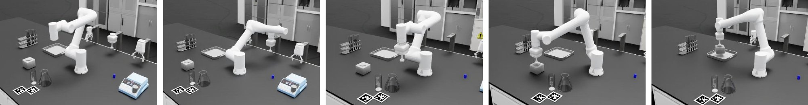
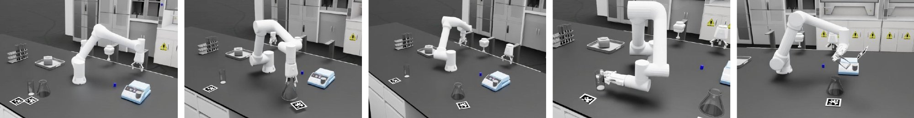
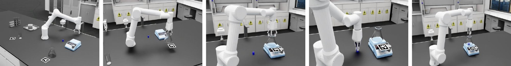
Sequential execution snapshots of the Move → Transfer → Stir workflow. Each row shows five representative keyframes from a single trial. Top: Move, the robot relocates a capped bottle to the target zone. Middle: Transfer, liquid reagent is poured into the destination vessel. Bottom: Stir, the mixture is stirred on the hotplate to complete the reaction sequence.
Validation on the Physical FR5
The execution layer and the Perception Module are validated on the physical FR5 with the 2-finger gripper, the two fixed cameras and the wrist camera, and an electronic scale (0.01 g, 5 Hz) under the receiving beaker. Three reagents represent a low-viscosity liquid, a high-viscosity liquid, and a granular reagent: water, an oligosaccharide syrup of about 3,000 cP at 26 °C, and powdered sugar.
Pouring Accuracy
The source beaker held in the gripper is tilted from a fixed start pose, and each reagent is poured 10 times at 10, 30, and 50 g. Water and the syrup reached within ±1.0 g of the target in all 60 pours, with a mean absolute error of 0.19–0.34 g. The syrup is about 3,000 times more viscous than water yet reached the same accuracy, because the pouring skill estimates the flow rate directly from the scale readings. A syrup pour took 52–86 s against 40–66 s for water. Powdered sugar reached within ±1.0 g in 23 of 30 pours and was biased toward overshoot, because powder slides down in clumps rather than flowing continuously.
| Reagent | Target (g) | Within ±1.0 g (%) | Within ±0.5 g (%) | Error (g) mean ± SD | Mean absolute error (g) | Duration (s) |
|---|---|---|---|---|---|---|
| Water | 10 | 100 [72, 100] | 80 [49, 94] | −0.02 ± 0.37 | 0.26 | 40–66 |
| 30 | 100 [72, 100] | 90 [60, 98] | +0.16 ± 0.23 | 0.23 | 42–51 | |
| 50 | 100 [72, 100] | 80 [49, 94] | +0.22 ± 0.30 | 0.32 | 46–51 | |
| Oligosaccharide syrup | 10 | 100 [72, 100] | 70 [40, 89] | +0.18 ± 0.38 | 0.34 | 52–86 |
| 30 | 100 [72, 100] | 90 [60, 98] | +0.12 ± 0.24 | 0.19 | 56–74 | |
| 50 | 100 [72, 100] | 100 [72, 100] | +0.14 ± 0.20 | 0.21 | 69–75 | |
| Powdered sugar | 10 | 80 [49, 94] | 60 [31, 83] | +0.37 ± 0.96 | 0.64 | 42–79 |
| 30 | 90 [60, 98] | 70 [40, 89] | +0.27 ± 0.52 | 0.36 | 52–89 | |
| 50 | 60 [31, 83] | 40 [17, 69] | +0.65 ± 0.62 | 0.73 | 45–82 |
Pouring accuracy on the physical FR5, 10 pours per reagent and target mass. The error is the difference between the scale reading 3 s after the pour ends and the target mass. Brackets give Wilson 95% confidence intervals.
All 90 pours, nine at a time. Each trial shows the same-numbered pour of every reagent and target mass, and the nine pours start together at the pouring goal (4× speed). At 10 g and 30 g the pours of a run go into the same beaker, so from the second pour on the scale starts from the amount already poured.
Physical Execution of the Transfer Procedure
In each run the planning module plans the trajectory from the positions of the two beakers measured by the Perception Module, and the robot picks up the source beaker, carries it upright, pours the target mass with the pouring skill, and returns the beaker to its place. One run was made for each of the nine combinations of the three reagents and 10, 30, and 50 g, with the source beaker moved between runs by up to 65 mm, and all nine runs completed the procedure. The trajectories excluding the pour were executed as planned without any position correction, and in every run the pouring skill took over the transfer from the planned start pose.
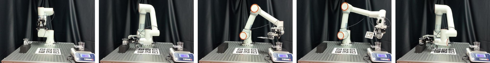
Keyframes of the Transfer procedure on the physical FR5. The robot picks up the source beaker, carries it upright, pours into the beaker on the scale, and returns it to its place.
The 30 g runs, from perception to placing the beaker back. Each view shows the 3D reconstruction drawn from the recorded joint states and the perceived beaker positions, the wrist camera, and the two fixed cameras. During the pour, the lower-right view switches to a camera facing the scale. The speed of each segment is shown at the lower right.
Marker Search with the Wrist Camera
In the 30 g water run, the tag of the receiving beaker appeared small in the fixed-camera images and fell short of the measurement quality criterion, so the arm carried the wrist camera through 36 predefined viewpoints. At the 21st viewpoint the wrist camera read the tag and updated the position of the beaker, and the Transfer was executed with the trajectory planned from that position. The search opens the water video above.
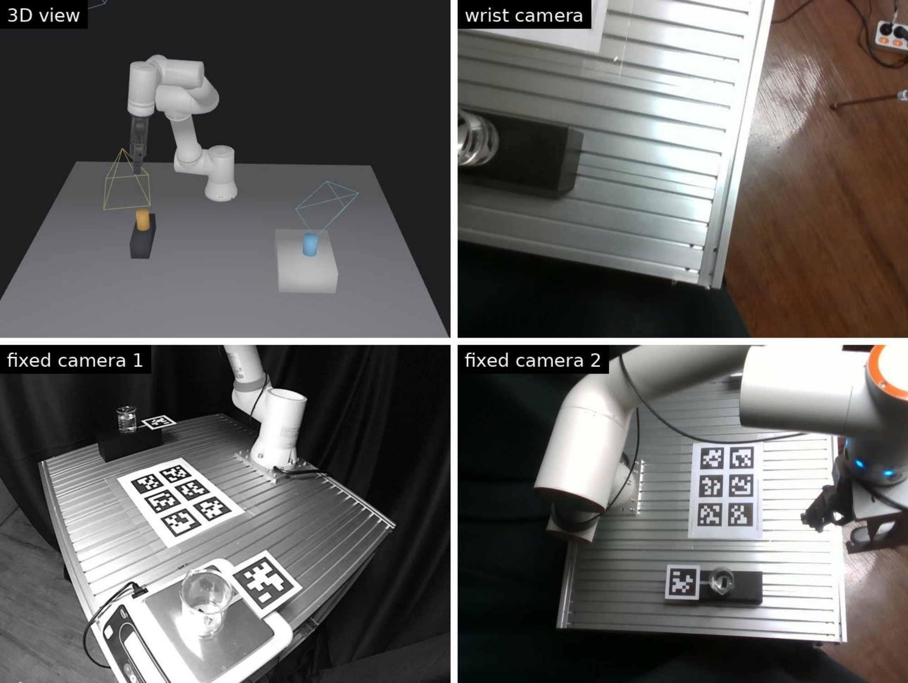
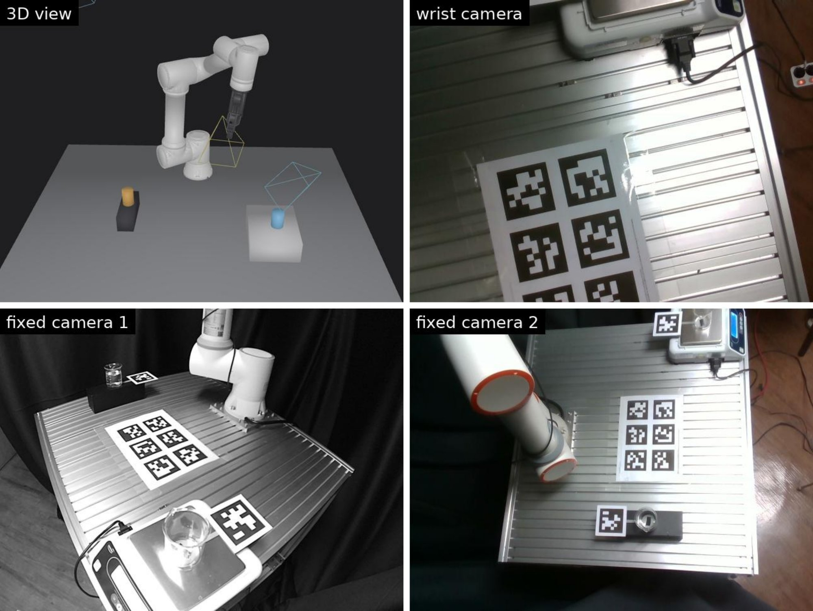
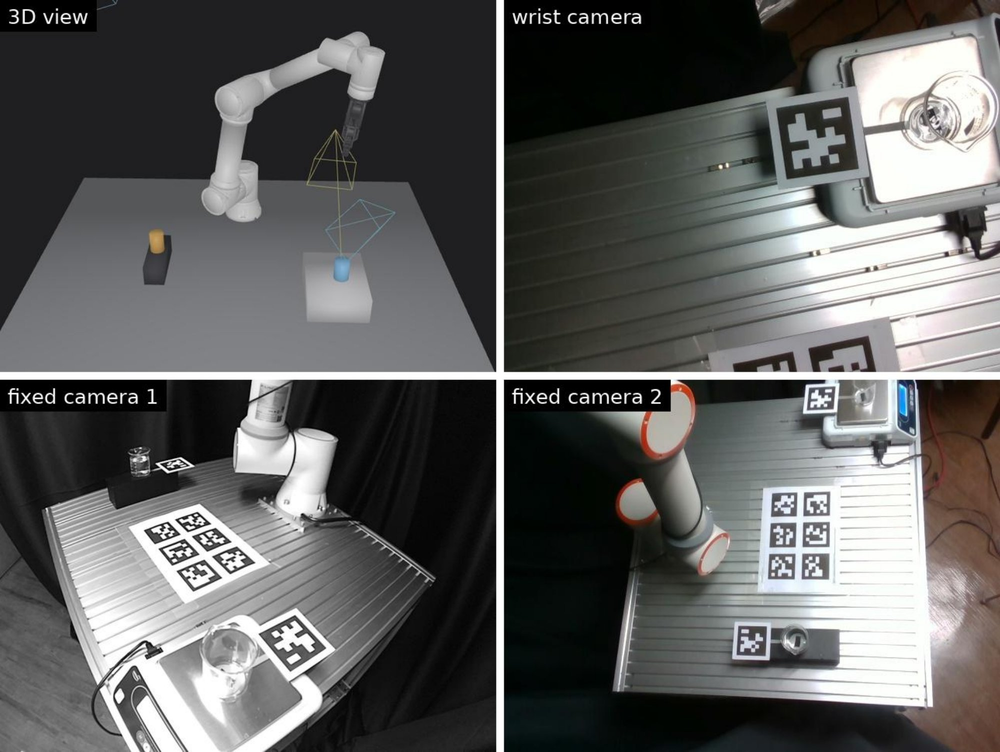
Marker search with the wrist camera. Each panel shows, at the same instant, a 3D reconstruction (upper left), the wrist camera (upper right), and the two fixed cameras (bottom). Left: start of the search. Middle: during the search. Right: the moment the tag of the receiving beaker is read at the 21st viewpoint and its position is updated.